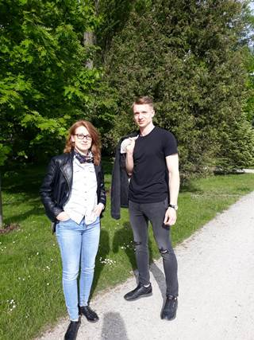
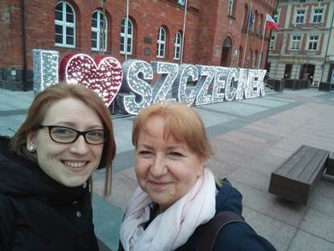
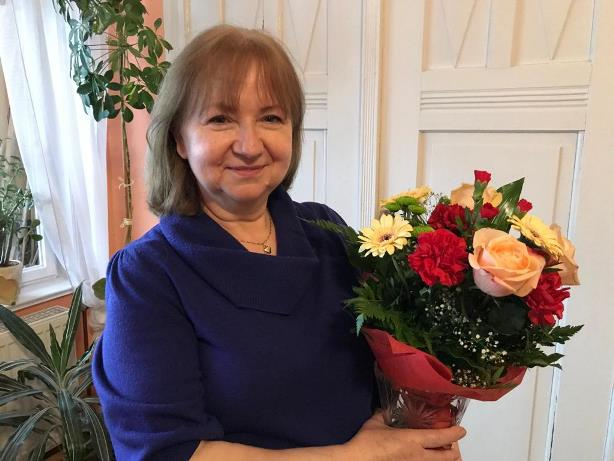

A kogo my tu mamy? Co ta za dwa człowieczki na zdjęciu? Chyba znowu
coś kombinują.... Czy to wiosna? Kasztany? Bez?
Może to dlatego,
że dziś najważniejszy dzień w roku dla każdej Mamy?
Z tej
okazji chcieliśmy Ci Mamo w ten niecodzienny sposób przekazać nasze
życzenia...

Droga Mamo,
choć daleko, to i tak zawsze jesteś blisko. Dobrze, że mamy taką technologię. W tym wyjątkowym dniu chciałam życzyć Ci wszystkiego co piękne, mądre, radosne. Ciesz się każdym dniem, słońcem i deszczem, wiatrem i burzą, pełną chatą i ciszą. Dużo zdrowia i niech już Cię żadne wirusy nie łapią. Uśmiechaj się zawsze i wszędzie, bo masz piękny uśmiech.
choć daleko, to i tak zawsze jesteś blisko. Dobrze, że mamy taką technologię. W tym wyjątkowym dniu chciałam życzyć Ci wszystkiego co piękne, mądre, radosne. Ciesz się każdym dniem, słońcem i deszczem, wiatrem i burzą, pełną chatą i ciszą. Dużo zdrowia i niech już Cię żadne wirusy nie łapią. Uśmiechaj się zawsze i wszędzie, bo masz piękny uśmiech.
Ania

Kochana Mamo,
z okazji Twojego dnia życzę Ci dużo radości i uśmiechu oraz dziękuję za trud w wychowaniu, troskę i cierpliwość do mnie 😁 Niech każdy dzień będzie dla Ciebie beztroski i pogodny
z okazji Twojego dnia życzę Ci dużo radości i uśmiechu oraz dziękuję za trud w wychowaniu, troskę i cierpliwość do mnie 😁 Niech każdy dzień będzie dla Ciebie beztroski i pogodny
Piotr

Wszystkiego najlepszego Mamo!